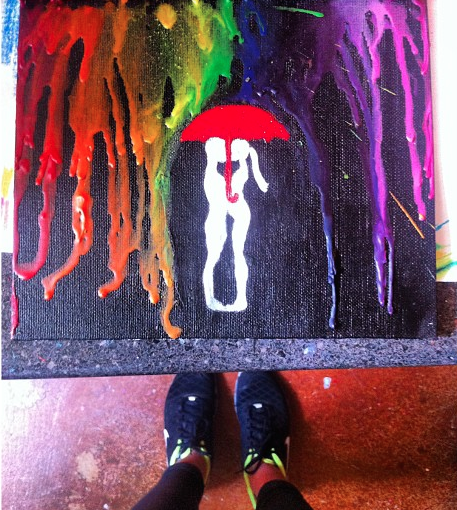
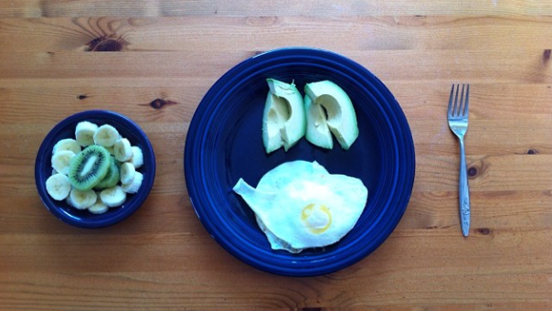
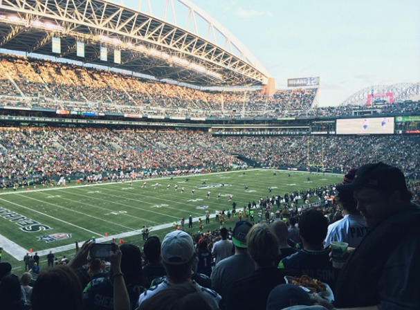

About
Hi I'm Kate. I'm a Seattle based web developer and designer, and an aspiring entrapreneur. I've been an artist all my life, working mostly with paint, I figured it was time to step it up and work with a new medium. My desire to develop, build, and create has landed me right in the middle of the world of website design and development.. When I'm not messing around creating or learning code, you'll find me doing flips in the gym, hiking up a mountain, or writing a new piano piece. Check out my blog for some awesome pics.
- 
- 
- 